Piezas de carrocería para KIA Rio
120 piezas disponibles hoy para KIA Rio, cada una con su foto y su código: parrillas (33), lámparas traseras (11), marcos de radiador (11), defensas traseras (9). Dinos el año de tu carro y te confirmamos si le sirve.
- Garantía de 3 días
- Foto real de cada pieza
- Efectivo, Yappy o ACH
- Lunes a sábado, 8:00 a. m. a 5:00 p. m.
Parrillas para KIA Rio 33
 384Rio2012-14 · genérico
384Rio2012-14 · genérico 385Rio2018-20 · original
385Rio2018-20 · original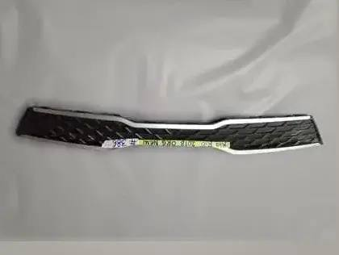
386Rio2018-20 · original nuevo 393Rio2018-20 · original
393Rio2018-20 · original 394Rio2018-20 · genérico nuevo
394Rio2018-20 · genérico nuevo 395Rio2018-20 · genérico
395Rio2018-20 · genérico 396Rio2018-20 · original nuevo
396Rio2018-20 · original nuevo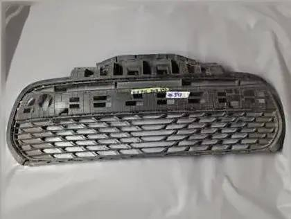
397Rio2018-20 · original 399Rio2018-20 · original nuevo
399Rio2018-20 · original nuevo 404Rio2012-14 · original nuevo
404Rio2012-14 · original nuevo 417Rio2012-14 · genérico
417Rio2012-14 · genérico 420Rio2015-17 · original
420Rio2015-17 · original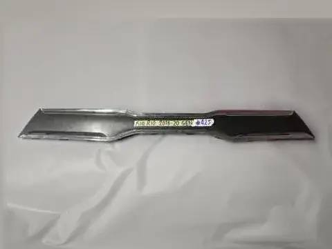
425Rio2018-20 · genérico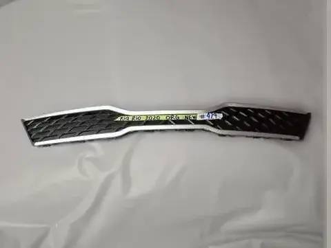
429Rio2018-20 · original nuevo 432Rio2018-20 · original
432Rio2018-20 · original 437Rio2018-20 · genérico nuevo
437Rio2018-20 · genérico nuevo 438Rio2018-20 · original nuevo
438Rio2018-20 · original nuevo 445Rio2015-17 · original
445Rio2015-17 · original 454Rio2018-20 · genérico
454Rio2018-20 · genérico 455Rio2018-20 · original
455Rio2018-20 · original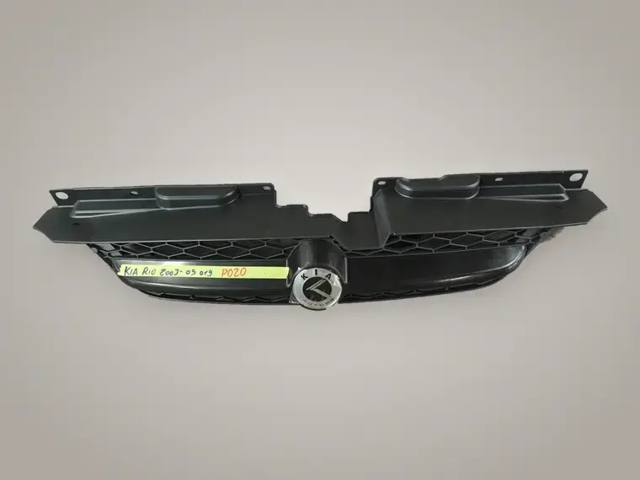
P020Rio2003-05 · original P019Rio2003-05 · original
P019Rio2003-05 · original P016Rio2018-20 · original
P016Rio2018-20 · original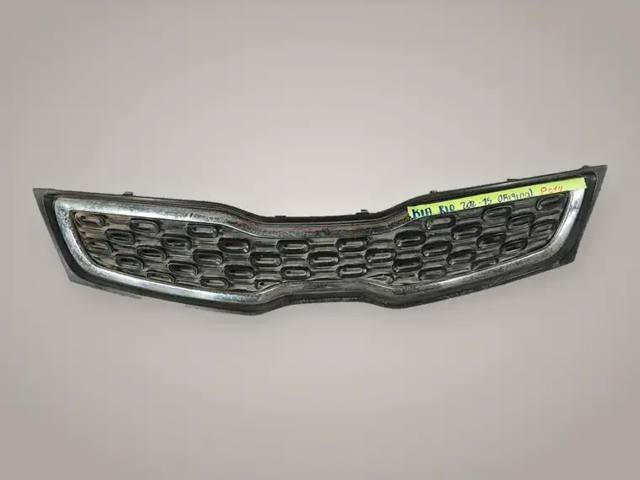
P014Rio2012-15 · original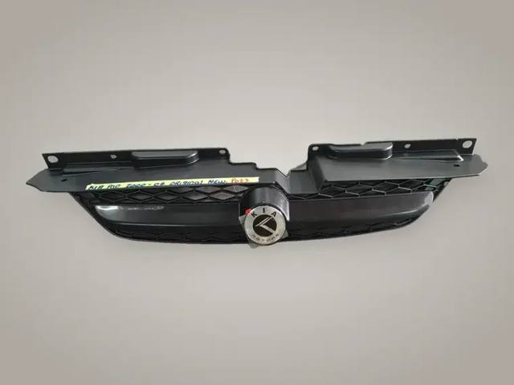
P023Rio2003-05 · original nuevo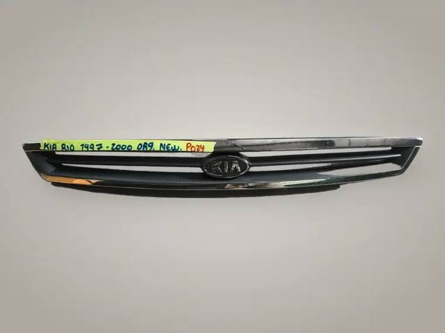
P024Rio2000-02 · original nuevo P025Rio2000-02 · original nuevo
P025Rio2000-02 · original nuevo P026Rio2003-05 · original nuevo
P026Rio2003-05 · original nuevo P027Rio2003-05 · original nuevo
P027Rio2003-05 · original nuevo P028Rio2003-05 · original nuevo
P028Rio2003-05 · original nuevo P029Rio2003-05 · original nuevo
P029Rio2003-05 · original nuevo P040Rio2000 · original nuevo
P040Rio2000 · original nuevo P045Rio2003-05 · original
P045Rio2003-05 · originalLámparas traseras para KIA Rio 11
 247Rio2012-14 · lado izquierdo · genérico
247Rio2012-14 · lado izquierdo · genérico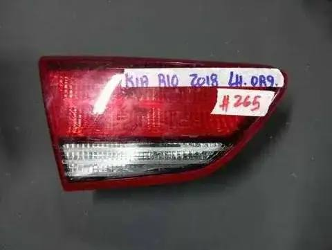
265Rio2018-20 · lado izquierdo · original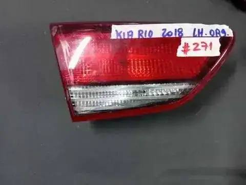
271Rio2018-20 · lado izquierdo · original 280Rio2012-17 · lado derecho · original
280Rio2012-17 · lado derecho · original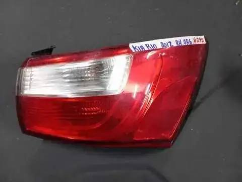
295Rio2012-14 · lado derecho · original 296Rio2018-2021 · lado derecho · original
296Rio2018-2021 · lado derecho · original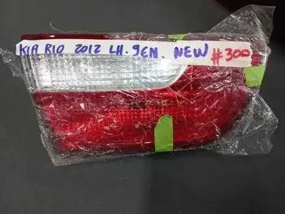
300Rio2012-14 · lado izquierdo · genérico nuevo 302Rio Sedan2012-14 · lado derecho · genérico
302Rio Sedan2012-14 · lado derecho · genérico 304Rio2015-17 · lado derecho · genérico
304Rio2015-17 · lado derecho · genérico 305Rio2018-20 · lado derecho · original
305Rio2018-20 · lado derecho · original 851Rio2019-23 · lado izquierdo · original
851Rio2019-23 · lado izquierdo · originalMarcos de radiador para KIA Rio 11
 MR006Rio2018-23 · genérico
MR006Rio2018-23 · genérico MR007Rio2018-23 · genérico
MR007Rio2018-23 · genérico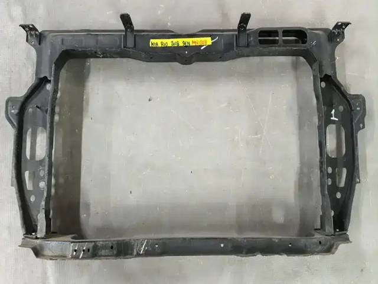
MR008Rio2018-23 · genérico MR012Rio2012-17 · original nuevo
MR012Rio2012-17 · original nuevo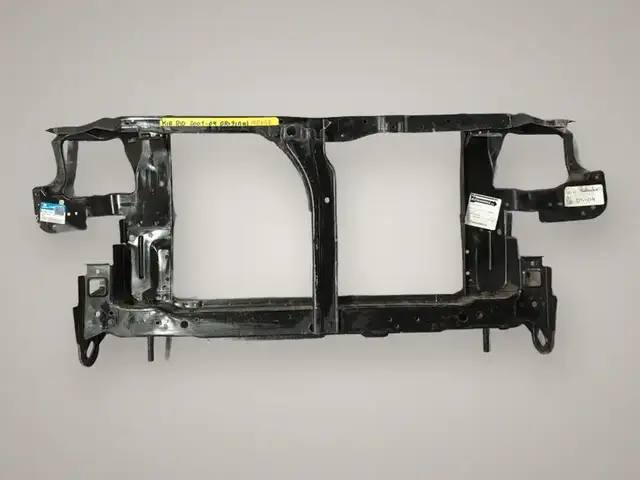
MR053Rio2001-04 · original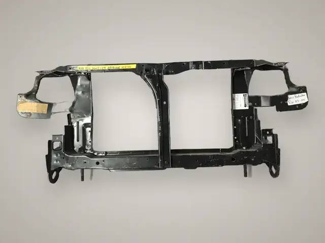
MR054Rio2001-04 · original MR055Rio2001-04 · original
MR055Rio2001-04 · original MR057Rio2001-04 · original
MR057Rio2001-04 · original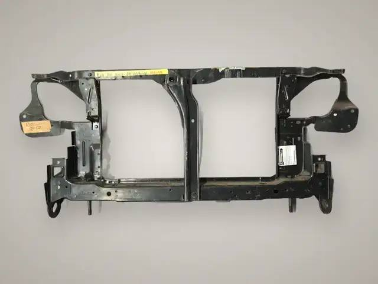
MR058Rio2001-04 · original MR059Rio2001-04 · original
MR059Rio2001-04 · original MR060Rio2001-04 · original
MR060Rio2001-04 · originalDefensas traseras para KIA Rio 9
 DT068Rio2018-20 · original
DT068Rio2018-20 · original DT075Rio2018-20 · original nuevo
DT075Rio2018-20 · original nuevo DT076Rio2018-20 · original
DT076Rio2018-20 · original DT078Rio2008-10 · original
DT078Rio2008-10 · original DT081Rio2018-20 · original
DT081Rio2018-20 · original DT083Rio2018-20 · original
DT083Rio2018-20 · original DT092Rio2018-20 · genérico
DT092Rio2018-20 · genérico DT093Rio2016-18 · original
DT093Rio2016-18 · original DT224Rio2015-17 · original
DT224Rio2015-17 · originalVidrios para KIA Rio 7
 VA001Rio2012-17 · original
VA001Rio2012-17 · original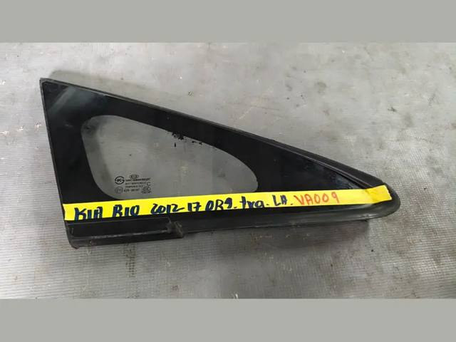
VA009Rio2012-17 · lado izquierdo · original VA017Rio2012-17 · lado derecho · original
VA017Rio2012-17 · lado derecho · original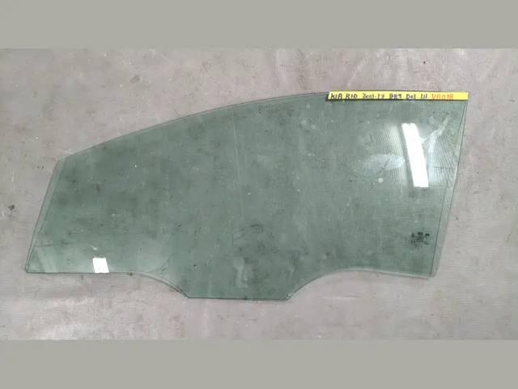
VA018Rio2012-17 · lado izquierdo · original VA021Rio2012-17 · original
VA021Rio2012-17 · original VA024Rio2012-17 · original
VA024Rio2012-17 · original VA034Rio2012-17 · original
VA034Rio2012-17 · originalHalógenas y faros antiniebla para KIA Rio 6
 HA044Rio Sedán2012-15 · lado derecho · original
HA044Rio Sedán2012-15 · lado derecho · original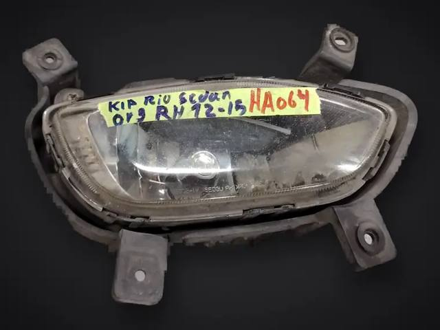
HA064Rio Sedán2012-15 · lado derecho · original HA103Rio2018-20 · lado derecho
HA103Rio2018-20 · lado derecho HA104Rio2017-22 · lado izquierdo
HA104Rio2017-22 · lado izquierdo HA105Rio2012-15 · lado izquierdo
HA105Rio2012-15 · lado izquierdo HA106Rio Sedán2015-17 · lado izquierdo · original nuevo
HA106Rio Sedán2015-17 · lado izquierdo · original nuevoDefensas delanteras para KIA Rio 5
 798Rio2018-20 · original nuevo
798Rio2018-20 · original nuevo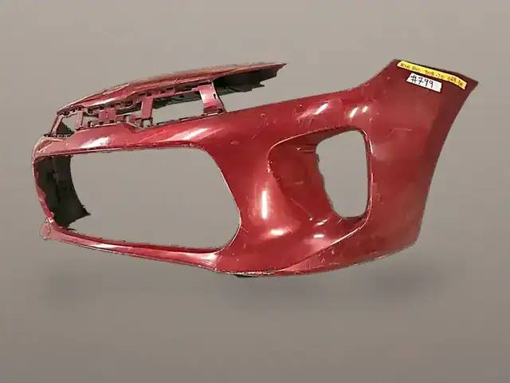
799Rio2018-20 · original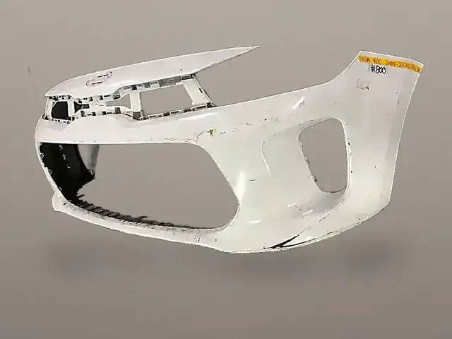
800Rio2018-20 · original 801Rio2018-20 · genérico
801Rio2018-20 · genérico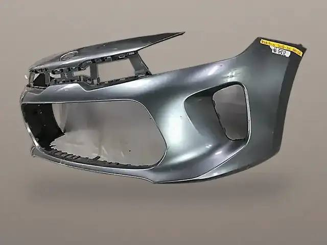
802Rio2018-20 · originalFaros y lámparas delanteras para KIA Rio 4
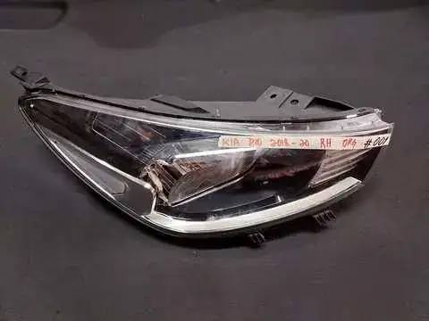
001Rio2018-20 · lado derecho · original 004Rio2018-20 · lado izquierdo · genérico
004Rio2018-20 · lado izquierdo · genérico 008Rio2013-17 · lado derecho · original
008Rio2013-17 · lado derecho · original LD018Rio2018-20 · lado izquierdo · original
LD018Rio2018-20 · lado izquierdo · originalCubrepolvos para KIA Rio 4
 CP006Rio2018-23 · lado izquierdo · genérico
CP006Rio2018-23 · lado izquierdo · genérico CP034Rio2018-23 · lado izquierdo · original
CP034Rio2018-23 · lado izquierdo · original CP036Rio2018-23 · lado derecho · original
CP036Rio2018-23 · lado derecho · original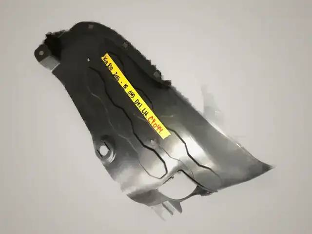
CP044Rio2016-18 · lado izquierdo · originalRetrovisores para KIA Rio 4
 RV005Rio2018-23 · lado derecho · original
RV005Rio2018-23 · lado derecho · original RV016Rio2018-20 · lado izquierdo · original
RV016Rio2018-20 · lado izquierdo · original RV031Rio2012-14 · lado izquierdo · original
RV031Rio2012-14 · lado izquierdo · original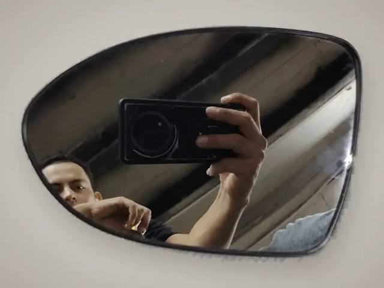
RV051Rio2011-16 · lado izquierdo · original nuevoGuardafangos para KIA Rio 4
 GF047Rio2015-17 · lado derecho · original
GF047Rio2015-17 · lado derecho · original GF052Rio2018-20 · lado derecho · original
GF052Rio2018-20 · lado derecho · original GF054Rio2018-20 · lado derecho · original nuevo
GF054Rio2018-20 · lado derecho · original nuevo GF133Rio2008-2012 · lado derecho · original
GF133Rio2008-2012 · lado derecho · originalRefuerzos traseros para KIA Rio 4
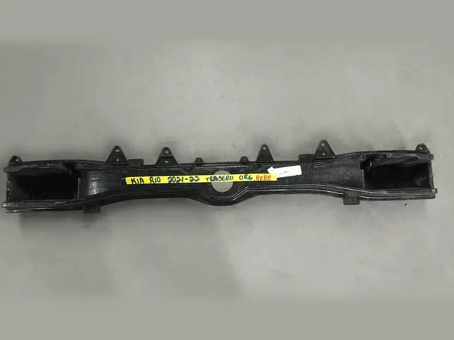
R080Rio2021-22 · original R081Rio2021-23 · original
R081Rio2021-23 · original R095Rio2012-17 · original
R095Rio2012-17 · original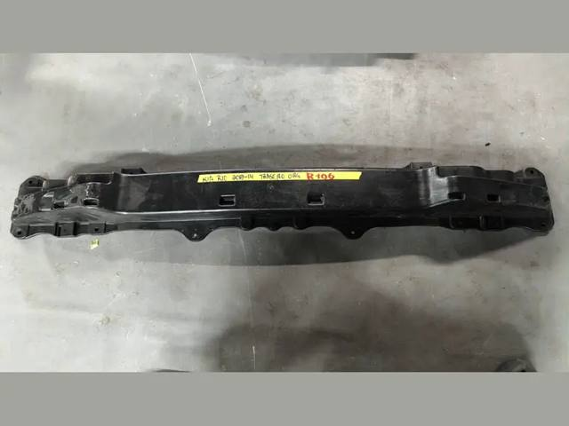
R106Rio2012-14 · originalDepósitos de agua para KIA Rio 4
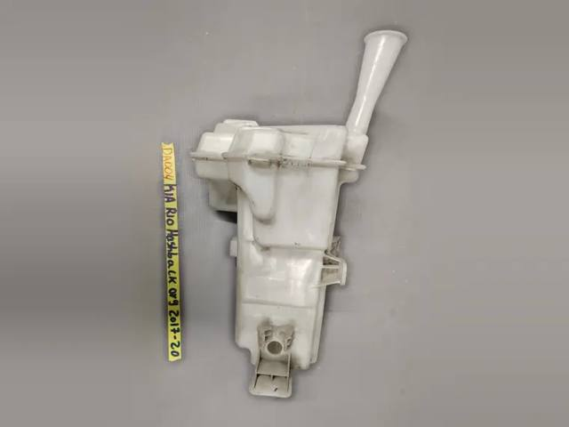
DA004Rio Hatchback2017-20 · original DA009Rio Hatchback2017-20 · original nuevo
DA009Rio Hatchback2017-20 · original nuevo DA011Rio2011-15 · original nuevo
DA011Rio2011-15 · original nuevo DA021Rio / Hyundai Accent2006-11 · original
DA021Rio / Hyundai Accent2006-11 · originalPuertas para KIA Rio 3
 PD001Rio2012-17 · lado derecho · original
PD001Rio2012-17 · lado derecho · original PD006Rio2012-17 · lado izquierdo · original
PD006Rio2012-17 · lado izquierdo · original PT014Rio2018-23 · lado izquierdo · nuevo
PT014Rio2018-23 · lado izquierdo · nuevo R041Rio
R041Rio R044Rio
R044Rio MLT007Rio Hatchback
MLT007Rio Hatchback MLT017Rio
MLT017Rio TA036Rio
TA036Rio TA019Rio
TA019Rio TM019Rio
TM019Rio CH076Rio
CH076Rio TB004Rio Sedán
TB004Rio Sedán GFT004Rio
GFT004Rio